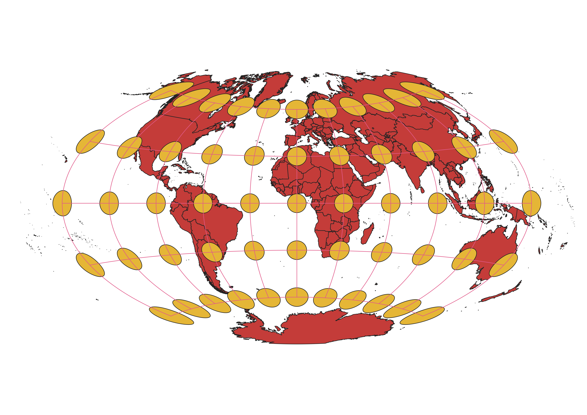

In this project I learned how to display images in different projections
For this homework, I experimented and saw different projections of the world from QGIS
The projections are all unique and have different distortions. It is interesting to see how and where the different projections are most distorted. In general, the most distorted parts of the maps are near the poles and at high latitudes.
WGS84 Projection
This projection doesn't have a horrible amount of distortion. The circles are stretched somewhat horizontally. The longitude and latitude lines are still in a rectangular grid. The higher latitudes are more stretched and seem very large.

Aitoff Projection
Around the prime meridian the distortion is relatively small. As the longitude increases so does the distortion. The most distortion is at the corners of the grid.

The distortion seriously increases as the latitude increases. Things around the equator look small. Antartica in this projection is obnoxiously large.
Some observations

Sphere Winkle
The grid in this one is once again morphed. It looks like it is bulging out. The circles are somewhat distorted but it doesn't seem to be too extreme.

Sphere Cylindrical Equal Area
The distortion seems pretty consistent from 60 degrees north to 60 degrees south latitude. At the poles the distortion increases a lot. The contintinents look like they are being crushed and flattened.

North Pole Azimuthal
Most of thee continents seem fairlt accurate and consistent. It gradually increases in distortion as you move away from the center. It does look like Antartica circles the entire world and is huge.

South Pole Equidistant
This map doesn't seem very usable or practicle. This is the one projection I have seen where antartica is represented accurately. However, it is difficult to tell what the other continents look like and it begins to look like a jumbled mess.

Now, you should add the following projections on your own:
EPSG: 3857, 53018, 54034, 54027, 102016, and two additional projections that you choose.
Data used for this project
Download Natrual Earth 1:10m Cultural Vector